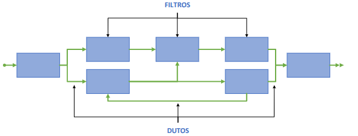
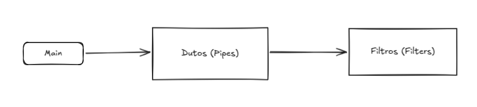
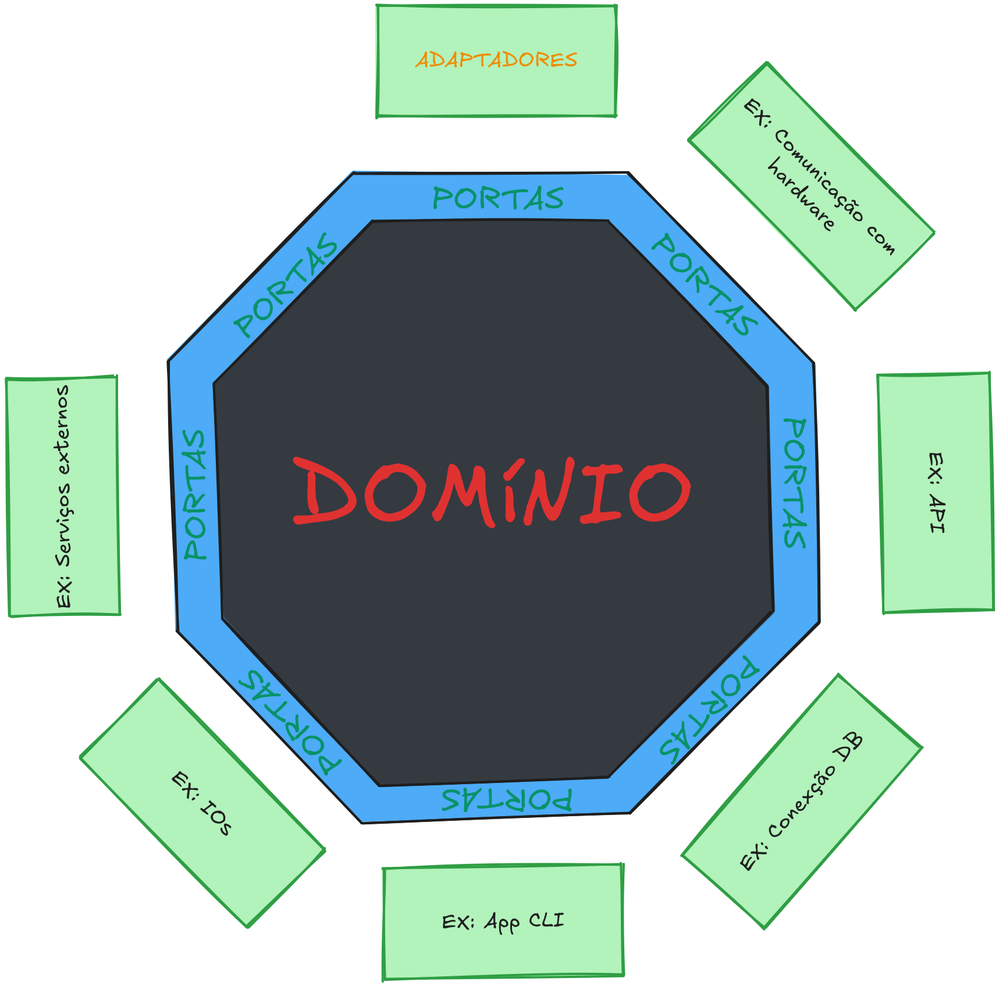

Projeto e arquitetura de software
2025-09-10 tags: -Software e sua metalinguagem
Projetos de software
É a fase que objetiva definir e especificar uma solução implementada. É onde ocorre as tomadas de decisão relativas até estratégias e tecnologias. E é onde ocorre um refinamento dos modelos conceituais obtidos na fase de análise e especificação.
Aumentam a dificuldade do desenvolvimento:
- Escopo e complexidade do software
- Entrosamento e tamanho da equipe
- Mudança de requisitos
- Mudança de tecnologias envolvidas
Projetos informais:
- Os requisitos, modelos e projetos residem apenas na mente dos desenvolvedores.
- Projeto é uma ideia superficialmente definida que está na cabeça da equipe.
Então, só funciona para sites pequenos…
Análise e especificação: Geralmente software que tem certo nível de organização, tem: elicitação, análise e especificação de requisitos. A análise e especificação criam o domínio do problema e não fornece detalhes e estratégias de implementação. E definir esses e outros detalhes é o projeto de software
Projeto de software:
- Possuem diferentes soluções.
- Quer transformar a especificação de um requisito em especificação de solução
- Querem propor uma solução.
- Nessa fase temos tomada de decisão sobre o software.
- Detalhes de implementação
- Tecnologias
- Como lidar com limitações de hardware
- A interface
- Determinar recursos necessários
As decisões vão de maior abstração para menor abstração.
- Independem do ciclo de vida.
- Se inicia depois da análise e especificação.
- Última atividade do processo de modelagem e primeira atividade tecnológica

Etapas da fase de projeto
- Projeto Arquitetônico - definição da macro organização e suas relações, organização e suas divisões.
- Projeto elementar - Definição dos módulos, seus módulos interiores e seus relacionamentos.
- Projeto detalhado - Detalhamento dos elementos especificados no projeto elementar.
Principios de projeto
Projetos mal construídos provocam consequências graves:
- Baixa produtividade
- Baixa qualidade
- Requisitos não atendidos
- Atrasos no cronograma
- Aumento de trabalho
Princípios gerais de projeto:
- Projeto sem qualidade = software sem qualidade
- Possuem princípios fundamentais de um projeto:
- Considerar abordagens alternativas
- Deve ser rastreável
- Reutilizar soluções eficientes conhecidas
- Uniformidade
- Deve ser aberto a mudanças
- Apto a ser avaliado quanto a qualidade
- Revisado
- Possibilitar uma visão do todo
- O todo deve ser decomposto em partes
- Refinamento das partes
- Minimizar a distância conceitual entre domínio da solução e do problema
- Suportar circunstâncias não usuais
- Nível de abstração deve ser mais alto que a codificação. Não deve falar como fazer e sin o que fazer.
Princípios da engenharia de software:
- Software existe para agregar valor aos stakeholders
- O projeto deve ser o mais simples possível
- Visão arquitetural é fundamental
- Modelos devem ser simples
- Projeto deve poder acomodar alterações
- Deve Reutilizar soluções existentes.
- Decisões devem ser bem pensadas.
Princípios da modelagem ágil para projetos:
- Crie apenas modelos necessários
- Desenvolva modelos simples
- Devem ser passíveis de alteração
- Valide os módulos construídos
Os sistemas da Informação
Sistema de transformação ou processamento: Sistema que dada uma entrada, dá uma saída.
Sistema de transformação contínua: Sistemas que fazem transformação (processamento) de forma ininterrupta.
Fowler diz características sobre sistemas da Informação:
- gerenciam grandes massas de dados
- possuem geralmente banco de dados
- podem armazenar dados por longos períodos de tempo
- constantemente podem mudar por requisitos ou expansões
- permitem acesso simultâneo e conxorrente
- possuem interfaces
- lidam com usuários que não dominam a utilização do sistema
- apresentam dados de distintas formas
- podem estar integrados a outros sistemas e ter problemas de integração
- possuem regras de negócio e atendes condições que mudam
- as condições podem tornar o sistema muito complexo
Dessa forma, um si é um sistema de interface interativa e gerenciador de transações.
Desse modo, podemos definir padrões de qualidade:
- Usabilidade
- Segurança
- Confiabilidade
- Eficiência
- Compatibilidade
- Manutenabilidade
Categorias de sistema por plataforma:
- Desktop
- Mobile
- Web
- Informativa - que informa
- Interativa - grande interação com o usuário
- Transacional - Realiza transações (Banco)
- Orientadas a fluxo de trabalho - Facilita atividades de trabalho, controle de estoque…
- Ambiente de trabalho colaborativo - Vários usuários usam ao mesmo tempo
- Comunidades e mercados online - Sistemas de recomendação, fóruns
Estilos arquiteturais
Usar arquiteturas para:
- evitar testes
- evitar problemas que teria reinventando a roda
- Fornece vocabulario comum
- Melhor comunicação
Um estilo arquitetural trás um arquétipo generico para uma solução.
Um estilo arquitetural é um conjunto de principios e padrões para uma organização estrutural de um projeto.
Se definem por componentes e conectores. Podem usar conjuntamente os estilos. Taxonomia clássica:
- Estrutura
- Domínio
- Distribuição
- Comunicação
Orientado a objetos
Modelar sistemas usando conceitos do mundo real. Interação entre objetos são mensagens.
Princípios do estilo:
- Abstração
- Composição
- Herança
- Realização
- Encapsulamento
- Polimorfismo
- Desacoplamento
Vantagens:
- Simplicidade de compreensão
- Facilidade de uso
- Facilidade de reuso
- Facilidade de manutenção e extensão
- Maior simplicidade de testes
Desvantagem:
- Qualidade depende do desenvolvimento : Usar o estilo orientado a objetos sem boas práticas não garante os benefícios citados.
- Modelagem complexa embora a codificação seja facilitada.
Baseado em componentes
Modela um sistema baseado em componentes funcionais e lógico.
- Deve ter interface definida pata comunicação com outros componentes
- Componentes se comunicam por mensagem
- Componentes tem um nível de abstração maior que uma classe
- Componentes pode ser constituídos por diversos módulos que se relacionam
- Apenas as interfaces são conhecidas por outros módulos/componentes
- Apenas interfaces podem se comunicar com outros módulos
A vantagem disso é a manutenção
Princípios:
- Reusabilidade
- Substituibilidade
- Encapsulamento
- Independência
Vantagens:
- Facilidade de implantação
- barateamento de produto
- Facilidade de desenvolvimento
- Reutilização.
Desvantagens:
- Menor flexibilidade
- Exige planejamento rigoroso
Dutos e filtros
O estilo Dutos e Filtros modela um fluxo direcionado de dados. Uma rede pela qual dados fluem de uma extremidade (origem) até a outra (destino). Os dados fluem através dos dutos e são transformados nos filtros.
Os dutos consistem em: Canais unidirecionais (simplex) de fluxo de dados. Transportam dados entre filtros.
Os filtros consistem em:
- Conversores de dados. Transformam o fluxo de entrada em fluxo de saída. Cada filtro possui um conjunto de entradas e um conjunto de saídas. Os filtros:
- Leem os dados de entrada;
- Realizam uma transformação;
- Geram os dados de saída.
- Os filtros são entidades independentes entre si. Não compartilham estados (informações internas) uns com os outros.
Neste estilo:
Os componentes são: Os filtros.
Os conectores são: Os dutos.


Algumas vantagens do estilo são:
- Simplicidade de compreensão e análise: Possibilita que o projetista compreenda o comportamento geral do sistema ou de parte dele como uma sucessão simples dos filtros envolvidos.
- Facilidade de reuso: Qualquer filtro pode ser conectado em novas redes, desde que sejam compatíveis.
- Facilidade de manutenção e expansão: Novos filtros podem ser adicionados ou substituídos em um sistema existente.
- Suporte a execução concorrente : É possível existir filtros não sequenciais que podem ser executados em paralelo.
Algumas desvantagens do estilo são:
- Complexidade de implementação: Embora processem dados incrementalmente, cada filtro precisa ser projetado como uma unidade de transformação de entradas em saídas independente e autocontida .
- Não atende bem aplicações interativas: Como o estilo prevê uma série de transformações a partir de uma entrada inicial, não é muito eficiente se no meio do processo forem necessárias operações de entrada de dados.
Camadas
Cada camada acessa serviços providos pelas camadas inferiores e fornece serviços às camadas superiores. A comunicação entre camadas ocorre por meio de protocolos de interação
Arquitetura em camadas fechada: Nesse modelo, cada camada se comunica apenas com a camada imediatamente abaixo, não tendo conhecimento das demais camadas inferiores.Fornece isolamento e manutenibilidade, mas eleva a complexidade do projeto e engessa mais seu modelo. Uma camada pode ter que agregar ou interfacear os recursos da camada inferior para que a camada acima tenha acesso a eles.
Arquitetura em camadas aberta: Nesse modelo, cada camada pode usar recursos de quaisquer camadas inferiores.Confere maior coesão às camadas e simplifica o projeto, mas aumenta o acoplamento entre camadas, prejudicando a manutenibilidade.
O conhecimento de uma camada é unidirecional. Uma camada conhece as camadas inferiores, mas não tem qualquer conhecimento sobre as camadas superiores
Vantagens:
- Alta separação de responsabilidades: Cada camada possui recursos com responsabilidades bem definidas segundo a um determinado critério, conferindo elevada coesão às partes do sistema.
- Nível de abstração incremental: O problema é dividido desde camadas que possuem responsabilidades mais específicas até camadas com responsabilidades mais gerais.
- Reutilização: Uma determinada camada pode ser usada com diferentes implementações, desde que provejam as mesmas interfaces para as camadas superiores.
- Facilidade de manutenção e expansão : Alterações em uma camada podem impactar apenas as camadas superiores. Novas camadas podem ser acrescidas ao modelo com relativa simplicidade.
Desvantagens:
- Não atende bem a todos os tipos de aplicação: Nem todos os sistemas podem ser facilmente estruturados em camadas.
- Desempenho reduzido: A divisão em camadas acaba impactando o desempenho, de modo que, aplicações que priorizam desempenho podem não ser bem atendidas pelo estilo.
- Nem sempre é simples estabelecer o número adequado de camadas: Um número muito grande de camadas pode elevar desnecessariamente a complexidade de implementação e impactar o desempenho. Por outro lado, um número muito reduzido de camadas pode não garantir a coesão e isolamento adequados, descaracterizando o estilo. O número de camadas não depende apenas dos requisitos funcionais, mas também dos não funcionais.
Hexagonal - Portas e Adaptadores
Regra de negócio no core. Infraestrutura em volta - adaptadores -. Sendo as portas, a forma que conecta o core com os adaptadores, as portas são interfaces. As portas podendo ser:
- Portas de entradas - Entra informação para o núcleo.
- Porta de saída - Sai informação do núcleo.
Portas de Entrada (Driving/Primary Ports): São a API do seu core. São chamadas por adaptadores primários (como um Controller de uma API REST ou) para iniciar uma ação no domínio. Portas de Saída (Driven/Secondary Ports): São as dependências do seu core. O núcleo precisa que algo implemente essa interface para que ele possa obter dados ou enviar dados para o exterior (ex: buscar algo no banco de dados, salvar um arquivo). ~Gemini
Tanto a infraestrutura quanto o core usam as portas, as portas são contratos que estabelecem uma diplomacia entre o core e os adaptadores. Os adaptadores não estabelecem diplomacia com outros adaptadores através das portas do core, mas sim com o próprio core.

Por definição, as portas ficam dentro do core, já que o core define como são essas interfaces, contudo, o Octávio pelo menos não cobra dessa forma, então para ele as portas ficam fora dos adaptadores por causa do seu nível de abstração, isso é antigo e eu particularmente não concordo, mas usa a forma que o professor falou.

Quem vai receber a responsabilidade de ter os objetos e coordenar o fluxo é a main. A main vai criar um adaptador e passar para dentro dele um core que implementa uma porta ou passar para dentro do core um adaptador que implementa uma porta, sendo essa porta uma porta de saída ou de entrada dependendo do domínio do core.
Orientado ao domínio
A modelagem do sistema deve ser a mais próxima possível da dinâmica do mundo real.
Camadas físicas
Vai dividir em camadas físicas mesmo… Firmware,
Essas camadas e os hardwares se comunicam via rede, por protocolos
Um servidor para login, um para mensagem, um para o servidor do jogo…